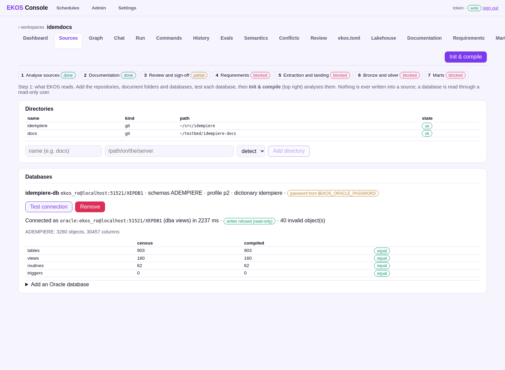
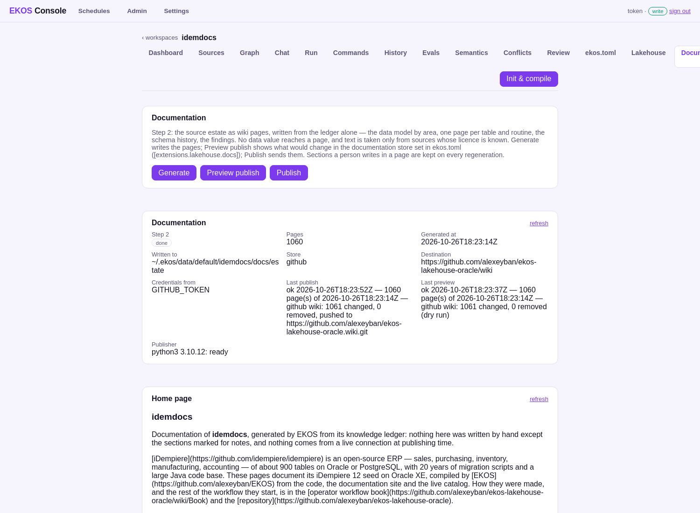
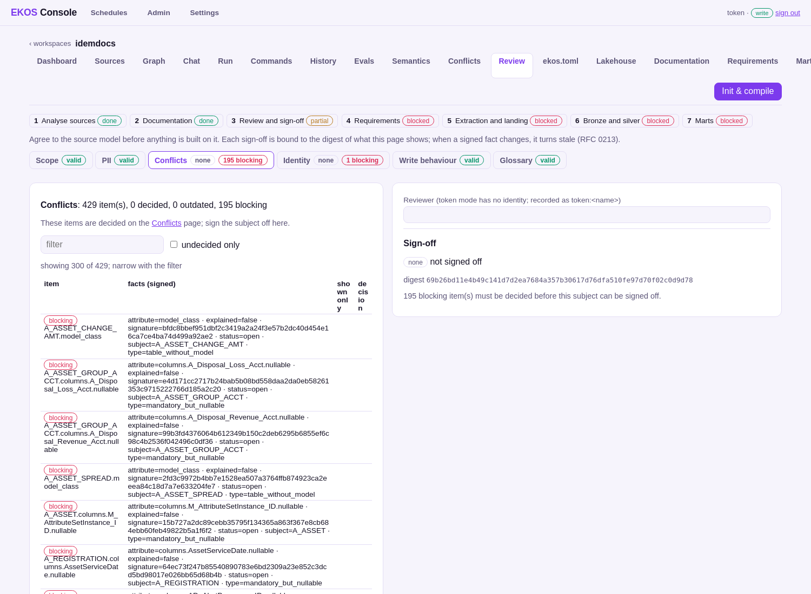
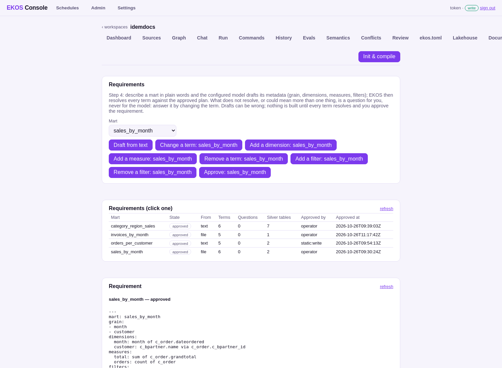
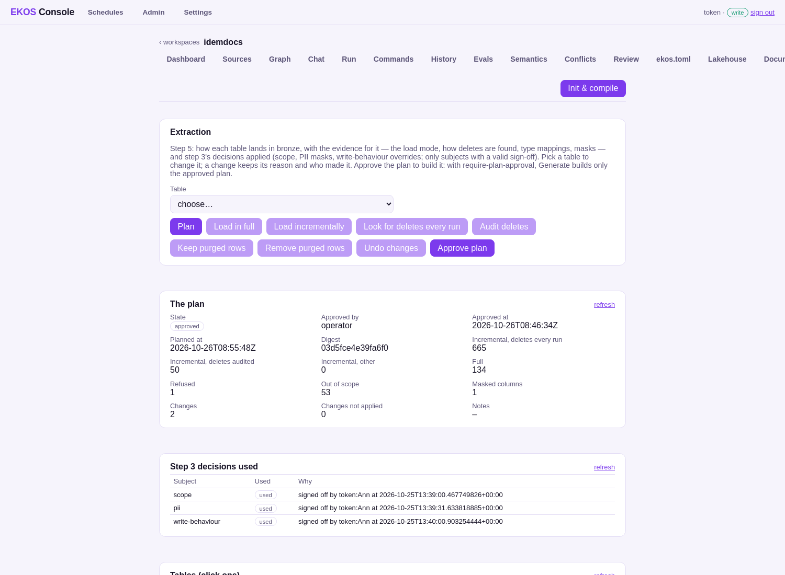
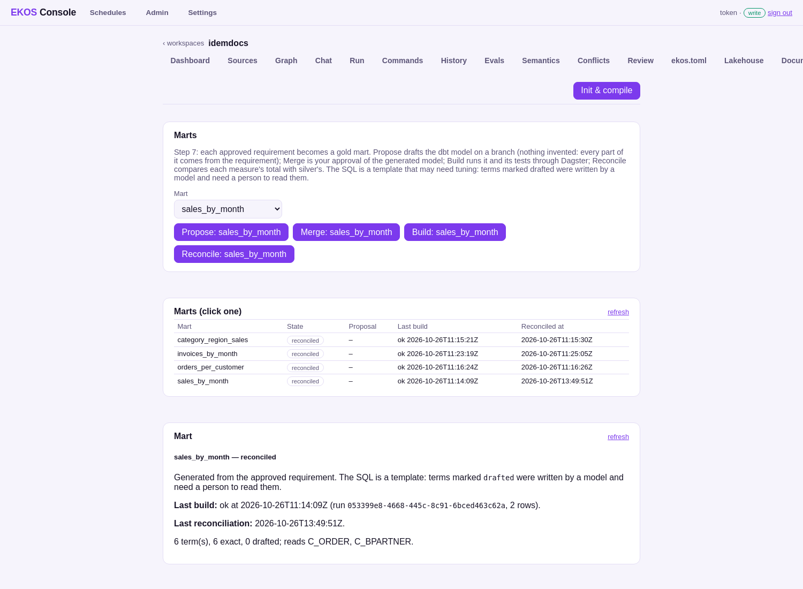

A compiler for enterprise knowledge read iDempiere's code, documentation and live Oracle catalog; an operator then took it through seven steps in a web console — every number here from a measured run.
The usual problem: the knowledge is spread over code, scripts, a docs site and the database, and the people who knew why are gone. Before building a lakehouse on it, someone has to say what it is.
| Step | The operator | On this testbed | State |
|---|---|---|---|
| 1 Analyse | adds sources, clicks Init & compile | census = compiled (903 / 160 / 62) | done |
| 2 Documentation | Generate, Preview, Publish | 1,060 pages on this repo's wiki | done |
| 3 Review | decides, signs each subject off | 4 of 6 signed; 195 conflicts for a person | partial |
| 4 Requirements | describes marts in words | 4 approved, nothing invented | behind 3 |
| 5 Extraction | reviews the plan per table, approves | 715 incremental · 134 full · 1 refused | behind 3 |
| 6 Bronze + silver | generates, loads | 165-table subset · 3,664 / 3,667 tests | behind 3 |
| 7 Marts | Propose, Merge, Build, Reconcile | 4 marts, every total equal to silver's | behind 3 |
"Behind 3": built and run, shown blocked because step 3 is not fully signed — the gate is the product's, not bypassed.



llama3 drafts the mart's header.
UPDATED where the code keeps it; full where some code skips it.
Generated extraction SQL, dbt-trino silver with tests from the application's own code lists and checks, Dagster. A 165-table subset: 3,664 of 3,667 tests pass.
| Mart · measure | Mart | Silver |
|---|---|---|
| sales_by_month · total | 379.90 | 379.90 |
| sales_by_month · orders | 3 | 3 |
| category_region_sales · sales | 358.40 | 358.40 |
| orders_per_customer · count of orders | 7 | 7 |
| invoices_by_month · invoiced | 541.02 | 541.02 |
| invoices_by_month · invoices | 4 | 4 |
